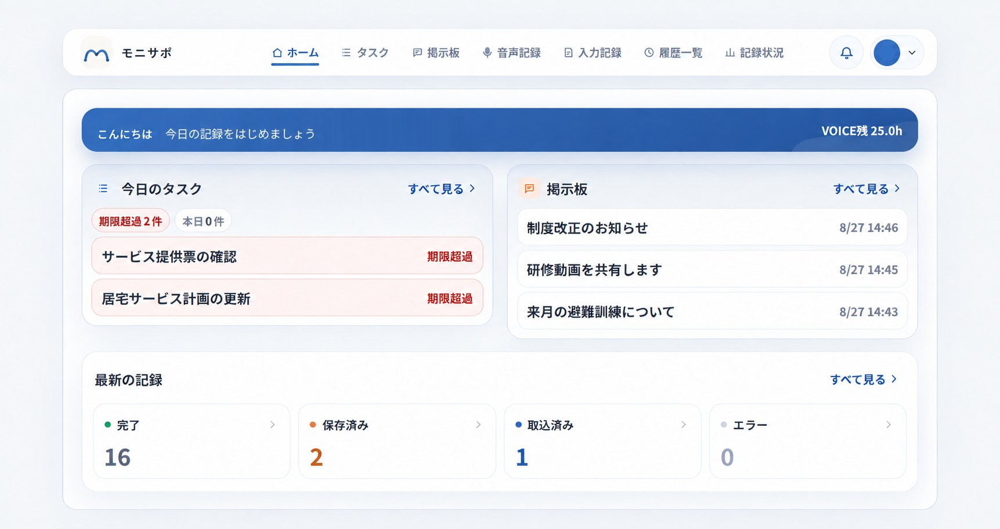
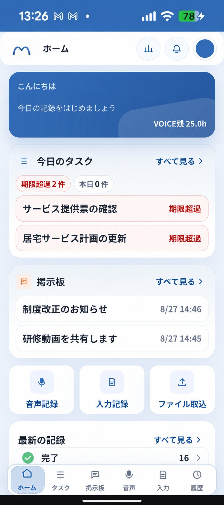
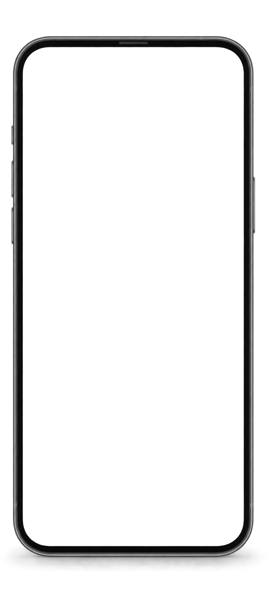

記録する
話す、録音する、文字を入力する。いつものメモやテンプレートからでも。
- リアルタイム文字起こし
- 録音ファイル取込
- 文字入力・貼り付け
Wonderwall × システムパートナー 共同開発
現場のケアマネと一緒につくった、
ケアマネのための業務支援ツール。
現役ケアマネの声をもとに、実際の業務で試しながら共同開発しています。
powered by MONISAPO


外ではスマホ。事務所ではPC。
実際の画面です。表示内容は説明用のもので、実在の事業所・利用者の情報ではありません。
こうした場面の会話やメモが、支援経過・担当者会議の記録になります。
話す、録音する、文字を入力する。いつものメモやテンプレートからでも。
支援経過や担当者会議など、必要な記録の形にAIが整形。
コピーして入力することも、RPAで自動転記することも。
録音でも、あとからの音声メモでも。話した内容を整え、確認して記録に使う、3つのステップです。
訪問や会議の会話をそのまま録音。終わってから、駐車中の車内や事務所でスマホに要点を吹き込む使い方もできます。
本日、ご自宅を訪問。ご本人より膝の痛みが続いているとの訴えあり。デイサービスの利用は継続できている。次回、主治医への相談状況を確認する。
事務所の整形ルールに沿って AI が記録を作成。発言内容との照合も行います。
内容を確認して、コピーして活用。自動化する場合は、転記予約で RPA に任せられます。
カンペを見て話す。メモを貼る。できた記録をそのまま使う。
録音カンペ
記録に必要な項目を見ながら音声入力。カンペの内容も編集できます。
見ながら話して、伝え忘れを防ぐ
文字入力・貼り付け
メモや定型文を貼り付けて、必要な内容を追記。AIが記録の形に整えます。
自宅訪問。食事・服薬の状況を確認。
貼り付け・追記 → AIで整形
整形済み貼り付け
テンプレートで作った記録も貼り付け。AI整形せず、確認して転記できます。
手元のテンプレートで作った記録
貼り付け → 確認・転記へ
用語の認識、事業所の書き方、発言との照合を支えます。
音声入力辞書
介護の専門用語に対応。さらに、事業所・職員ごとの用語や名前も辞書登録できます。
専門用語も、正しい表記に。
整形プロンプト
文体・記載方針を記録の種類ごとに登録。今お使いのプロンプトも取り込めます。
記録の種類に合うルールで整形
事実確認
発言とのずれや、話していない内容の追加を検知。確認が必要な箇所を知らせます。
発言「家族に連絡する予定」
記録「家族に連絡した」
予定と実施済みの違いを確認
AIが作成した記録は、内容を確認してからご利用ください。
標準
まだ記録できていない利用者や、対応が必要な業務を一覧で確認。
標準
お知らせや資料を掲示板で共有。必要な情報を職員みんなに。
オプション
タスクを手動で登録。記録内容から自動でタスクを作ることも。
オプション
利用者の安否と必要な支援を共有。災害時のBCP対応を支えます。
オプション
職員会議の録音から、話者分離し議事録を作成。職員への共有も。
あちこちに散らばった
サービスを一つに。
認証・暗号化・権限管理で、利用者さまの大切な情報を守ります。
パスキーと、認証アプリ（TOTP）の2段階認証に対応しています。
大切な情報を、通信時も保存時も暗号化して守ります。
記録の閲覧・操作は、事業所ごと・職員ごとに権限を分けています。
システム上で、いつ、誰が、何を行ったかを記録。万一の確認や監査の際にも、操作経緯を追跡できます。
自社アイコンをタップ
サービス提供票の確認
居宅サービス計画の更新
研修動画を共有します
来月の予定について
アプリ名・ロゴ・アイコン・カラーを、事業所に合わせて設定。
プロンプト・音声入力辞書・録音カンペなど、事業所の記録方法に合わせて調整。
記録づくりだけでも。タスク・掲示板・RPAまで組み合わせても。
導入のご相談・デモのご希望・テストパートナーへのご応募は、相談フォームからお受けしています。
ご希望やお困りごとをご相談ください。
業務に合う使い方を、デモでご案内します。
必要な機能を選び、初期設定を行います。
日々の記録づくりから、ご利用を始めます。
3営業日以内にご連絡いたします。